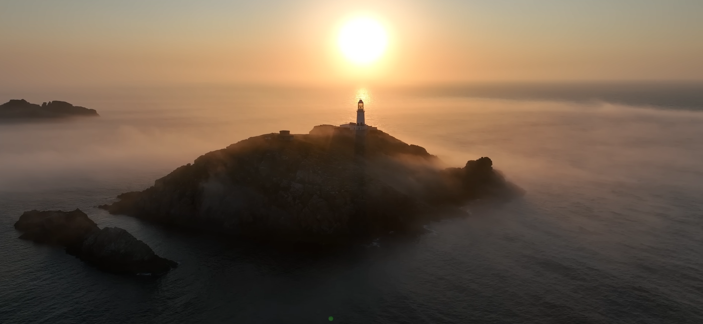

Restoran Kimliği
Misafiri pasif tüketici olmaktan çıkarıp deneyimin merkezine yerleştiren, hikâyesi olan bir fine dining konseptidir.
Fine Dining
Balık & Deniz Teması
Deneyim Odaklı
Casquets Lighthouse Dining Experience
The Keeper’s Catch; Casquets kayası ve deniz fenerinden ilham alan, misafirlerini kıyıdaki özel karşılama alanında ağırlayan, ardından balık avı deneyimine çıkaran ve su altı tüplerinde ya da panoramik fener barında unutulmaz bir akşam yaşatan yenilikçi restoran konseptidir.
Bu proje yalnızca bir restoran değil; deniz, mimari, deneyim ve sürdürülebilirlik temelli bütüncül bir yaşam alanı kurgusudur.
Misafiri pasif tüketici olmaktan çıkarıp deneyimin merkezine yerleştiren, hikâyesi olan bir fine dining konseptidir.
Özel gün kutlamaları, gastronomik deneyim arayan ziyaretçiler, üst segment müşteriler, turistler ve konsept mekân seven misafirler.
Balık avı, su altı loca deneyimi, deniz feneri barı ve sürdürülebilir deniz ekosistemi yaklaşımı ile benzerlerinden ayrılır.
Ziyaret, kıyıdaki karşılama alanından başlar; deniz feneri ve su altı tüplerinde devam eden çok aşamalı bir akşam deneyimine dönüşür.
Misafirler kıyıdaki özel giriş alanında karşılanır. Vale, portmanto ve ekipman teslim noktası bu bölümde yer alır.
Rehberli tekne turu ile güvenli av alanına çıkılır. Misafirler deneyimin aktif katılımcısı olur.
Tutulan balıklar hazırlanırken misafirler deniz feneri barında ya da su altı localarında vakit geçirir.
Misafirin tuttuğu balık, seçilen pişirme tekniği ve eşlikçilerle şef tarafından hazırlanarak servis edilir.
Proje, güçlü mimari anlatımı ve etkileyici deniz altı atmosferi ile unutulmaz bir mekân dili oluşturur.



Panoramik fener barı, özel localar ve kişiselleştirilmiş servis yaklaşımı; konsepti üst segment bir deneyime dönüştürür.
Projede sürdürülebilirlik yalnızca malzeme seçimiyle sınırlı değildir; atık yönetimi, ekosistem desteği ve deniz yaşamının korunması birlikte ele alınır.
Balık temizleme sürecinde ortaya çıkan kemik, kafa, deri ve küçük işleme artıkları ayrıştırılır. Uygun işlemlerden geçirilerek protein değeri yüksek balık yemi hammaddesine dönüştürülür. Bu yaklaşım, gıda atığını azaltırken denizel üretim döngüsüne geri kazandırma sağlar.
Kabuk, mineral içerikli yan ürünler ve uygun sürdürülebilir malzemeler; bilimsel danışmanlık ve yerel izin süreçleri doğrultusunda yapay resif modüllerinin bir parçası olarak değerlendirilir. Bu modüller belirlenen alanlara yerleştirilerek balıkların yuvalayabileceği, saklanabileceği ve küçük deniz canlılarının tutunabileceği mikro habitatlar oluşturur.
Av miktarı kontrol edilir, koruma altındaki türlerden kaçınılır ve misafirlere sürdürülebilir balıkçılık hakkında bilgi verilir. Amaç yalnızca tüketim değil; deniz yaşamına katkı sunan döngüsel bir işletme modeli geliştirmektir.
LED aydınlatma, düşük su tüketimli sistemler, porsiyon planlaması, mevsimsel ürün kullanımı ve kontrollü tedarik zinciri ile enerji ve kaynak kullanımı optimize edilir.
Bu form tanıtım amaçlı örnek olarak hazırlanmıştır. GitHub Pages üzerinde çalışır ancak veri kaydetmez.
Bu konsept, yenilikçi mutfak dersi kapsamında hem görsel hem kavramsal açıdan güçlü bir sunum malzemesi üretir.